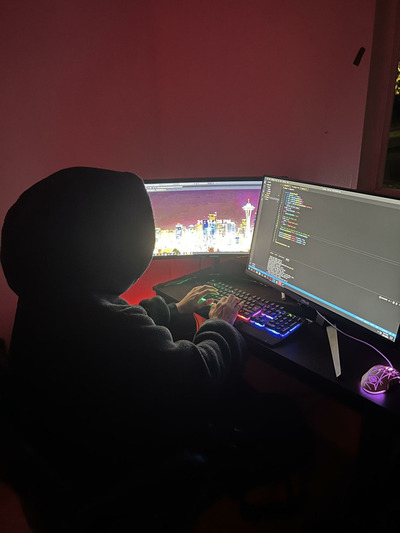
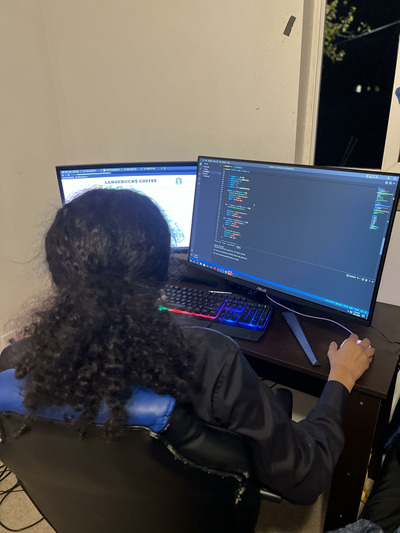

About Me
Hey my name is feysal omar
Im 19 years old but besides my age I have a lot of work experience.
At age 16-17 I would volunteer at the seattle public library to help bring communty kids together though group programs.
Then going on to 17 I got my first grown up job at the seattle seahawks stadium working front desk at the pro shop so I think I could say I have experience in retail and customer support.
After highschool I decided to get my guard license and become a part time security guard at the starbucks headquarter, I did that for a year and decided to quit to pursue my career as an emerging professional studying at seattle central campus to earn a certificate in software development.

